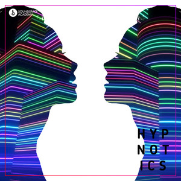
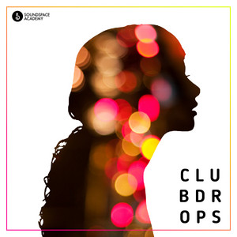
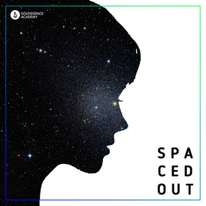
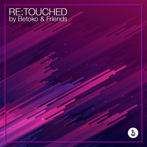

Time - Pururu Mix
Marco Vendal
El sello de la academia
No terminas con una maqueta guardada en tu compu.
Soundspace tiene su propio sello discográfico, con presencia en plataformas de streaming y tiendas de música en línea. El proyecto final de Producción Musical puede publicarse a través de él. Ese es el cierre del programa: tu música, afuera.
 SOUNDSPACE ACADEMY · CONDESA, CDMX
SOUNDSPACE ACADEMY · CONDESA, CDMX
01 / LA PRUEBA
ESTÁ EN EL CATÁLOGO
Esto no es una promesa de lo que podrías lograr. Son 66 canciones de 55 artistas que ya salieron por el sello y hoy están en plataformas.

Marco Vendal

BusyAntoni
I'm Already Dead

Mictlan
Vendal
Gudiño
Ernesto Caballero

JVY C, Betoko
Agatha Meyer
Menak
Diez lanzamientos del catálogo. Dale play arriba para escuchar los 66 completos.
02 / DE TU PROYECTO
A LAS PLATAFORMAS
El camino es el programa. No hay una convocatoria aparte ni un concurso: el proyecto final es la pieza que se presenta.
Durante el programa desarrollas una pieza completa, desde la idea hasta el acabado, con acompañamiento de tus profesores.
Al cerrar el programa puedes presentar tu proyecto a Soundspace Academy Records para su revisión.
Se escucha y se te devuelve una valoración concreta: qué funciona, qué conviene ajustar y si está listo para salir.
Si procede, tu track se publica a través del sello en servicios de streaming y tiendas de música en línea.
Consulta con el equipo las condiciones del sello, el proceso de revisión y qué contempla tu programa.
03 / SIN LETRAS
CHIQUITAS
04 / POR DÓNDE
SE EMPIEZA
 Creación & sonido
Creación & sonido
Eso que imaginas, hazlo sonar.
Conocer el programa Formación integral
Formación integral
Tu proyecto, de principio a fin.
Conocer el programa05 / RESUELVE
TUS DUDAS
No. Es una opción que se te ofrece al cerrar el programa. Si prefieres lanzar tu música por tu cuenta, el programa también trabaja las estrategias de publicación para que lo hagas con criterio.
La publicación está sujeta a revisión y a las condiciones del sello. El equipo escucha tu proyecto y te devuelve una valoración concreta antes de tomar una decisión.
Pendiente de definir: condiciones de derechos y regalías del sello.
Pendiente de confirmar: capacidad de lanzamientos por generación.
TU SIGUIENTE
PASO
Si ya produces, cuéntanos en qué estás trabajando. Si apenas empiezas, descubre por dónde.